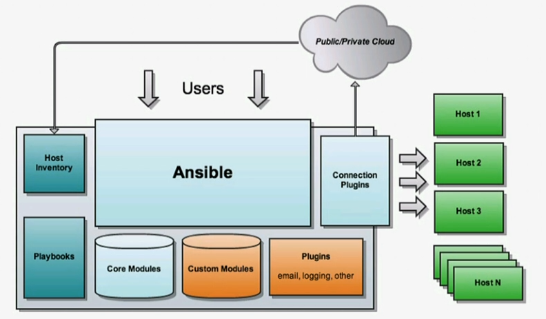
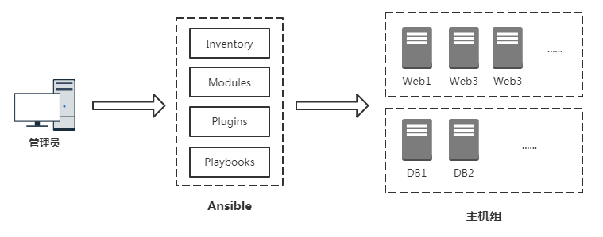

01 Ansible介绍与安装
1. 介绍 Ansible
1.1 什么是 Ansible?
Ansible是一款自动化运维工具，基于Python开发，集合了众多运维工具（puppet、cfengine、chef、func、fabric）的优点，实现了批量系统配置、批量程序部署、批量运行命令等功能。
Ansible是基于模块工作的，本身没有批量部署的能力。真正具有批量部署的是Ansible所运行的模块，Ansible只是提供一种框架。主要包括：
(1) 连接插件connection plugins：负责和被监控端实现通信；
(2) host inventory：指定操作的主机，是一个配置文件里面定义监控的主机；
(3) 各种模块核心模块、command模块、自定义模块；
(4) 借助于插件完成记录日志邮件等功能；
(5) playbook：剧本执行多个任务时，非必需可以让节点一次性运行多个任务。
Ansible架构图：


1.2 Ansible 无需代理
Ansible 围绕无代理架构构建。通常而言，Ansible 通过 OpenSSH 或 WinRM 连接它所管理的主机并且运行任务，方法通常是将称为 Ansible 模块的小程序推送至这些主机。这些程序用于将系统置于需要的特定状态。在 Ansible 运行完其任务后，推送的所有模块都会被删除。
Ansible 不需要批准使用任何特殊代理，然后再部署到受管主机上。由于没有代理，也不需要额外的自定义安全基础架构，
Ansible 具有多个重要的优点：
- 跨平台支持：Ansible 提供Linux、Windows、UNIX和网络设备的无代理支持，适用于物理、虚拟、云和容器环境。
- 人类可读的自动化：Ansible Playbook采用YAML文本文件编写，易于阅读，有助于确保所有人都能理解它们的用途。
- 完美描述应用：可以通过 Ansible Playbook进行每种更改，并描述和记录应用环境的每一个方面。
- 轻松管理版本控制：Ansible Playbook和项目是纯文本。它们可以视作源代码，放在现有版本控制系统中。
- 支持动态清单：可以从外部来源动态更新 Ansible 管理的计算机列表，随时获取所有受管服务器的当前正确列表，不受基础架构或位置的影响。
- 编排可与其他系统轻松集成：能够利用环境中现有的 HP SA、Puppet、Jenkins、红帽卫星和其他系统，并且集成到 Ansible 工作流中。
1.3 Ansible 方式
Ansible 的设计宗旨是工具易用，自动化易写易读。所以在创建自动化时我们应追求简单化。
Ansible 自动化语言围绕简单易读的声明性文本文件来构建。正确编写的 Ansible Playbook可以清楚地记录你的工作自动化。
Ansible 是一种要求状态引擎。它通过表达你所希望系统处于何种状态来解决如何自动化IT部署的问题。Ansible 的目标是通过仅执行必要的更改，使系统处于所需的状态。试图将 Ansible 视为脚本语言并非正确的做法。
2. 安装 Ansible
2.1 控制节点
Ansible 易于安装。 Ansible 软件只需要安装到要运行它的一个（或多个）控制节点上。由 Ansible管理的主机不需要安装 Ansible。
对控制节点的要求：
- 控制节点应是Linux或UNIX系统。不支持将Windows用作控制节点，但Windows系统可以是受管主机。
- 控制节点需要安装Python3（版本3.5或以上）或Python2（版本2.7或以上）。
如果操作系统是红帽8.0，Ansible 2.9可以自动使用 platform-python 软件包，该软件包支持使用Python的系统实用程序。你不需要从 AppStream安装python37或python27软件包。
[root@localhost ~]# yum list installed platform-python
Updating Subscription Management repositories.
Unable to read consumer identity
This system is not registered to Red Hat Subscription Management. You can use subscription-manager to register.
Installed Packages
platform-python.x86_64 3.6.8-1.el8.0.1 @anaconda
2.2 受管主机
Ansible的一大优点是受管主机不需要安装特殊代理。Ansible控制节点使用标准的网络协议连接受管主机，从而确保系统处于指定的状态。
受管主机可能要满足一些要求，具体取决于控制节点连接它们的方式以及它们要运行的模块。
Linux和UNIX受管主机需要安装有Python2（版本2.6或以上）或Python3（版本3.5或以上），这样才能运行大部分的模块。
对于红帽8，可以启用并安装python36应用流（或python27应用流）
yum module install python36
如果受管主机上启用了SELinux，还需要确保安装python3-libselinux软件包，然后才能使用与任何复制、文件或模板功能相关的模块。所以在工作的时候，应当把SELinux功能关闭。
2.3 基于Windows的受管主机
Ansible有许多专门为Windows系统设计的模块。这些模块列在https://docs.ansible.com/ansible/latest/modules/list_of_windows_modules.html部分中。
大部分专门为Windows受管主机设计的模块需要在受管主机上安装PowerShell 3.0或更高版本，而不是安装Python。此外，受管主机也需要配置PowerShell远程连接。Ansible还要求至少将.NET Framework 4.0或更高版本安装在Windows受管主机上。
本课程不对Windows受管主机做过多说明，未来在工作当中需要用到时请查阅以上官方文档链接。
2.4 受管网络设备
Ansible还可以配置受管网络设备，例如路由器和交换机。Ansible包含大量专门为此目的而设计的模块。其中包括对Cisco IOS、IOS XR和NX-OS的支持；Juniper Junos；Arsta EOS；以及基于VyOS的网络设备等。
我们可以使用为服务器编写playbook时使用的相同基本技术为网络设备编写Ansible Playbook。由于大多数网络设备无法运行Python，因此Ansible在控制节点上运行网络模块，而不是在受管主机上运行。特殊连接方法也用于与网络设备通信，通常使用SSH上的CLI、SSH上的XML或HTTP(S)上的API。
本课程不对受管网络设备做过多说明，未来在工作当中需要用到时请查阅官方文档链接https://docs.ansible.com/ansible/latest/modules/list_of_network_modules.html。
2.5 安装Ansible
# 提供YUM源
curl -o /etc/yum.repos.d/CentOS-Base.repo https://mirrors.aliyun.com/repo/Centos-8.repo
sed -i -e '/mirrors.cloud.aliyuncs.com/d' -e '/mirrors.aliyuncs.com/d' /etc/yum.repos.d/CentOS-Base.repo
rpm --reinstall https://mirrors.aliyun.com/epel/epel-release-latest-8.noarch.rpm
sed -i 's|^#baseurl=https://download.fedoraproject.org/pub|baseurl=https://mirrors.aliyun.com|' /etc/yum.repos.d/epel*
sed -i 's|^metalink|#metalink|' /etc/yum.repos.d/epel*
sed -i 's|$releasever|8|g' /etc/yum.repos.d/*
yum makecache
# 安装ansible
yum -y install ansible
ansible --version
# 通过使用setup模块验证localhost上的ansible_python_version
ansible -m setup localhost|grep ansible_python_version
课后习题
以下哪一个词语最适合描述 Ansible 架构？
a. 无代理
b. 客户端/服务器
c. 事件驱动
d. 无状态Ansible 默认使用哪一种网络协议与受管节点通信？
a. HTTP
b. HTTPS
c. SNMP
d. SSH以下哪种文件定义 Ansible 在受管节点上执行的操作？
a. 主机清单
b. 清单
c. Playbook
d. 脚本哪一种语言用于定义 Ansible Playbook？
a. Bash
b. Perl
c. Python
d. YAML